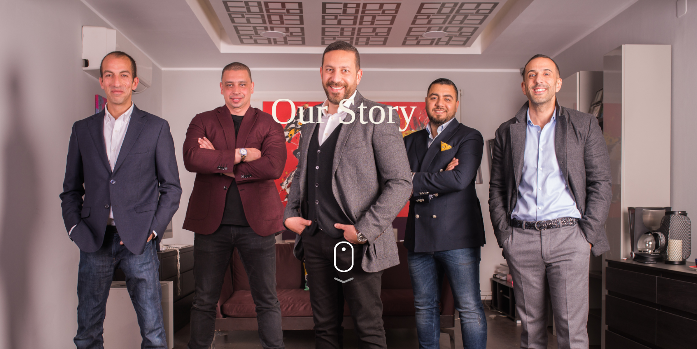
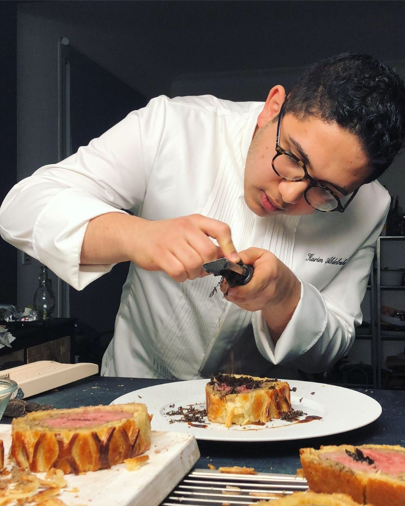
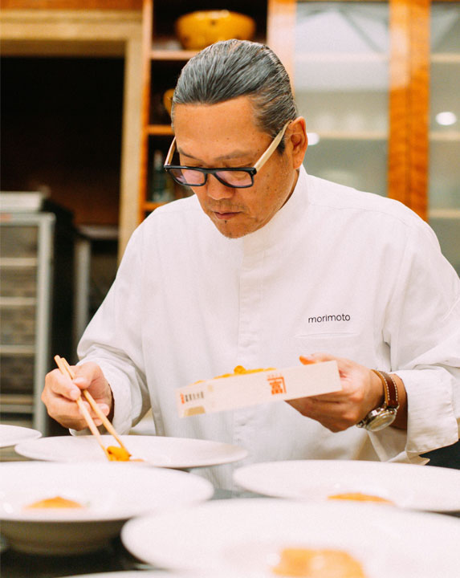
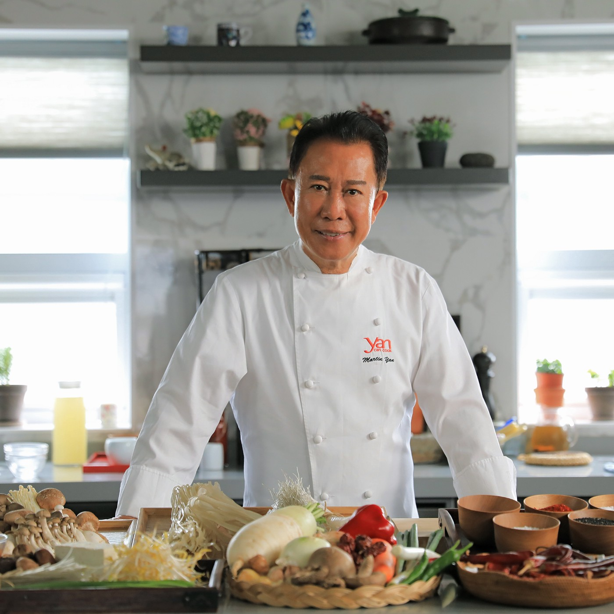

With its Brazilian origin and Japanese heritage, the Mori Sushi brand has redefined sushi in all its restaurants across Egypt.
Made with a recipe of passion and quality, Mori Sushi began as a small and pioneering restaurant in São Paulo, making its way
to the fine foods cravers of Egypt and Dubai to pamper their senses with the best Japanese cuisine in the region,
continuing to surpass all culinary expectations.

WHO ARE THE OWNERS?
The story started with a young entrepreneur who had a vision to establish the leading company in the Food and Beverages industry in Egypt.
The name of this young entrepreneur is Hossam Fahmy (CEO); at this time Hossam took the first step loaded with solid experience in the retail business
and especially in fashion and food industries. Mohamed Durra, Omar Durra, and Yasser Helmy showed interest to join this success story through investment.
This led to a newer giant called Mori International with a clear solid vision, becoming the market leader in the middle east. Mori Co. was the first business name for the
company and under which the first concept was introduced which is Mori Sushi, the first home grown concept for sushi. Originally the concept was imported from Brazil but the
team had to apply some adaptation and modification to meet the market's requirements
Our Highly Talented and Trained Chefs



KARIM ABDELRAHMAN
Eating With The Eyes
The professional chef started his career at a young age abroad. After high school, he decided to explore the gastronomic world in Switzerland and France, managing to work with the legendary Alain Ducasse in Paris. Today, he is now back in Egypt and works as a Consultant Chef, adding his spin to local culinary richness.
MASAHARU MORIMOTO
Don't Study ; Just Cook
Morimoto received practical training in sushi and traditional Kaiseki cuisine in Hiroshima, and opened his own restaurant in that city in 1980. Influenced by Western cooking styles, he decided to sell his restaurant in 1985 to travel around the United States. His travels further influenced his fusion style of cuisine.
MARTIN YUN
Happiness is within Cooking
Yan began teaching Chinese cooking for a college extension program and appearing on a Canadian talk show from Calgary in 1978. He has hosted over 3,500 episodes of the PBS cooking show Yan Can Cook since 1982. Yan has opened a chain of Yan Can Restaurants and founded the Yan Can International Cooking School in San Francisco